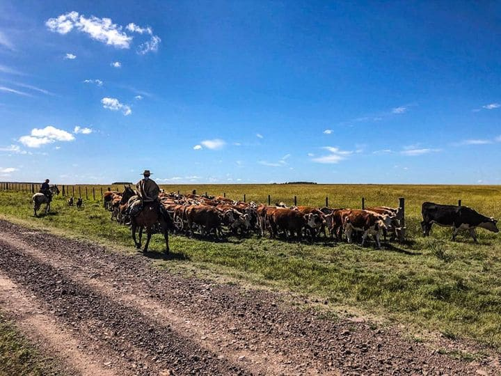
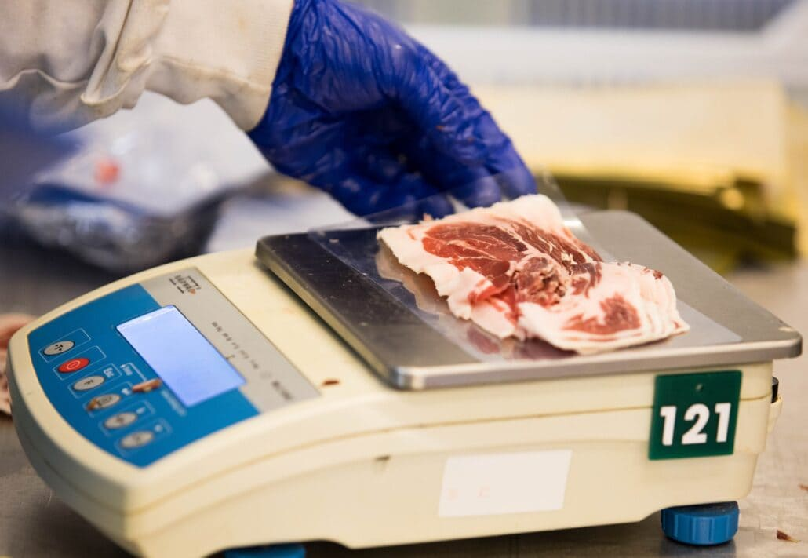
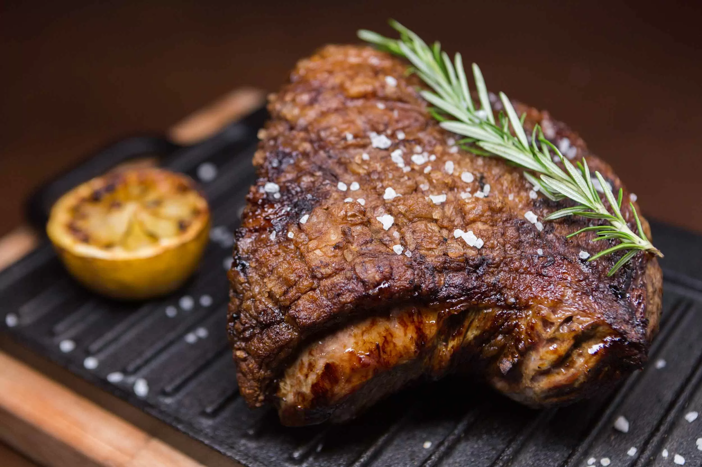

Garantia Completa
Los animales procesados en la planta son de una fuente conocida, que resulta del programa de fidelización con los productores de Frigorifico Mesa. La planta tiene un sistema de trazabilidad individual electrónica vanguardista para rastrear el ganado.

Tecnología Vanguardista
Frigorífico Mesa es el mayor procesador de novillos del Uruguay, presentando la más moderna tecnología para deshuesar y una gran capacidad de almacenamiento en su cámara frigorífica para maduración y refrigeración garantizada de los alimentos.

La Mejor Carne del Mundo
Estamos presentes en las cartas de los mejores restaurantes del mundo. Desde hace más de treinta años brindamos calidad y excelencia a través de los más destacados chefs.